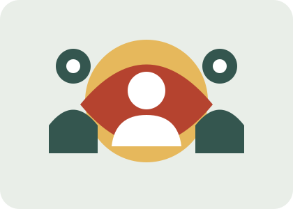

Respeto
Defender la dignidad y los derechos de todas las personas.
CAMPAÑA DE CONCIENCIACIÓN · AGENDA 2030
La paz, la justicia y la igualdad se construyen entre todas las personas.
Conoce el problemaNUESTRA ASOCIACIÓN FICTICIA
Red por la Equidad es una asociación ficticia creada para promover sociedades pacíficas, justas e inclusivas. Queremos dar a conocer el Objetivo de Desarrollo Sostenible 16 y recordar que todas las personas deben poder vivir con seguridad, acceder a la justicia y participar en las decisiones que afectan a su comunidad.
Creemos que la convivencia mejora cuando se respetan los derechos humanos, se rechaza la discriminación y las instituciones actúan con transparencia.

La ONU propone promover sociedades pacíficas e inclusivas, facilitar el acceso a la justicia y construir instituciones eficaces, responsables e inclusivas.
Consultar el objetivo en la web oficial de la ONU ↗Defender la dignidad y los derechos de todas las personas.
Promover la igualdad ante la ley y el acceso a mecanismos de ayuda.
Escuchar distintas voces y colaborar en la comunidad.